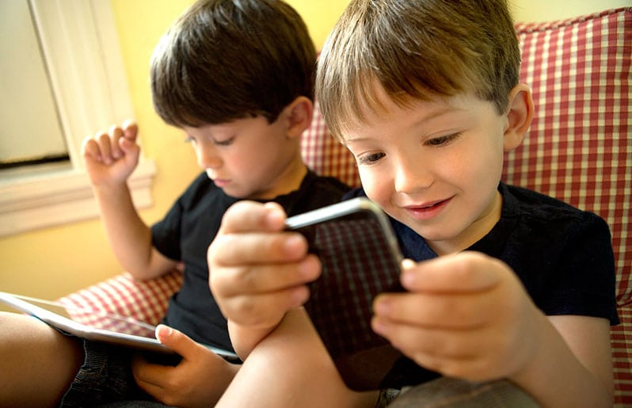
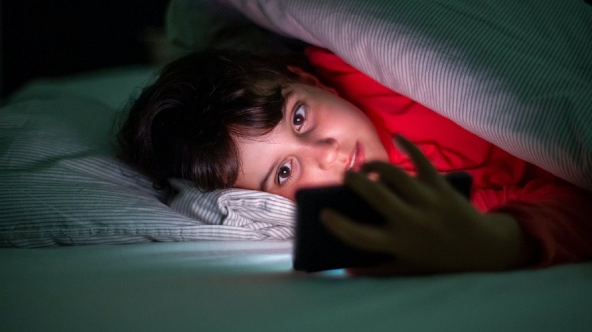

El darles acceso al celular a los niños
¿A que se debe?
En los ultimos años, muchos padres han recurrido a dejarle el celular a sus hijos
con el fin de que estos puedan distraerse y asi los padre puedan tener un rato libre
y asi mantener contentos a los mas pequeños, sin embargo esto tiene una contra que muchos
no toman en cuenta.

Las contras que tiene el dejarle el celular a los niños son los siguientes.
1- Dependencia total al celular: esta dependencia podria
hacer que un niño se empiece a aislarse.
2- Problemas de sueño: esto debe a que la exposición a la luz azul
que inhibe la producción de melatonia, la hormona que regula el sueño

3- Daños a la salud tanto fisica como mental: el desarrollo de problemas visuales, obesidad,
depresion, mayor impulsividad, menor capacidad de atención, etc. son lo que mas afecta al desarrollo del niño.
.jpg)
¿Comó solucionarlos?
En caso de que algunos tengan hijos por primera vez, lo mejor es no darles acceso al celular y solo concederles la oportunidad cuando sea el momento,
tambien poniendo el ejemplo sirve para su aprendisaje.
En caso de tener hijos que ya esten muy apegados al celular, hacer el esfuerzo por irlos desconectando, no con un lenguaje fuerte, si no con uno adecuado
que lo haga sentirse en confianza, mantener el aparato lejos y fuera de su vista, mientras mas tiempo permanezca sin verlo, mas dejara de necesitarlo,
ademas sin necesidad de castigos, pero tambien teniendo limites, limites razonables.